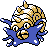

#139
Omastar
RockWater
Abilities: Swift Swim, Shell Armor, Weak Armor
Base stats BST 495
HP70
Attack60
Defense125
Speed55
Sp. Atk115
Sp. Def70
Evolution
None detected.
Level-up learnset
LevelMoveType
Lv. 1CrunchDark
Lv. 1Spike CannonNormal
Lv. 1Sand AttackGround
Lv. 1Knock OffDark
Lv. 1BindNormal
Lv. 1Toxic SpikesPoison
Lv. 1Water GunWater
Lv. 1ConstrictNormal
Lv. 1SpikesGround
Lv. 4WithdrawWater
Lv. 7LeerNormal
Lv. 10BiteDark
Lv. 13RolloutRock
Lv. 19Aurora BeamIce
Lv. 22BubblebeamWater
Lv. 25AncientpowerRock
Lv. 28ProtectNormal
Lv. 36Earth PowerGround
Lv. 44Power GemRock
Lv. 48Rock BlastRock
Lv. 52Hydro PumpWater
Lv. 56SurfWater
Lv. 63Shell SmashNormal